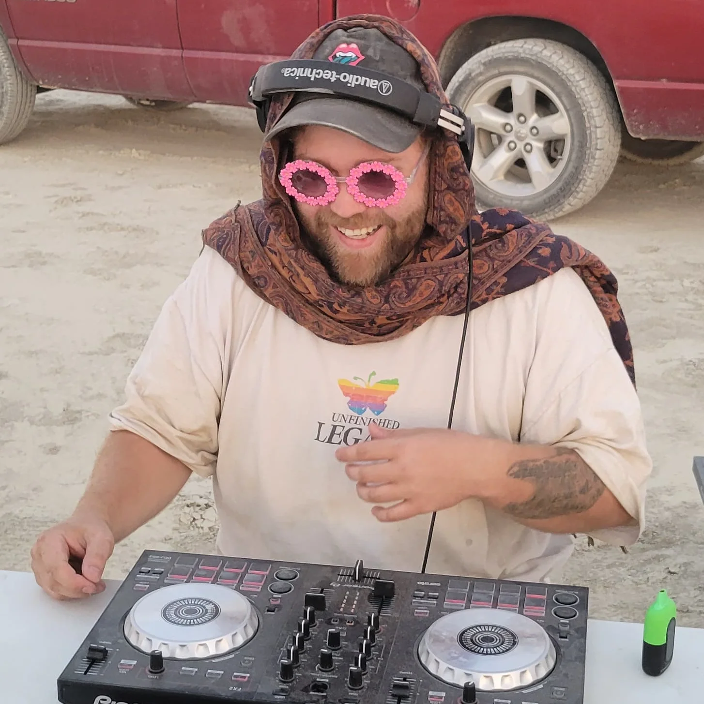
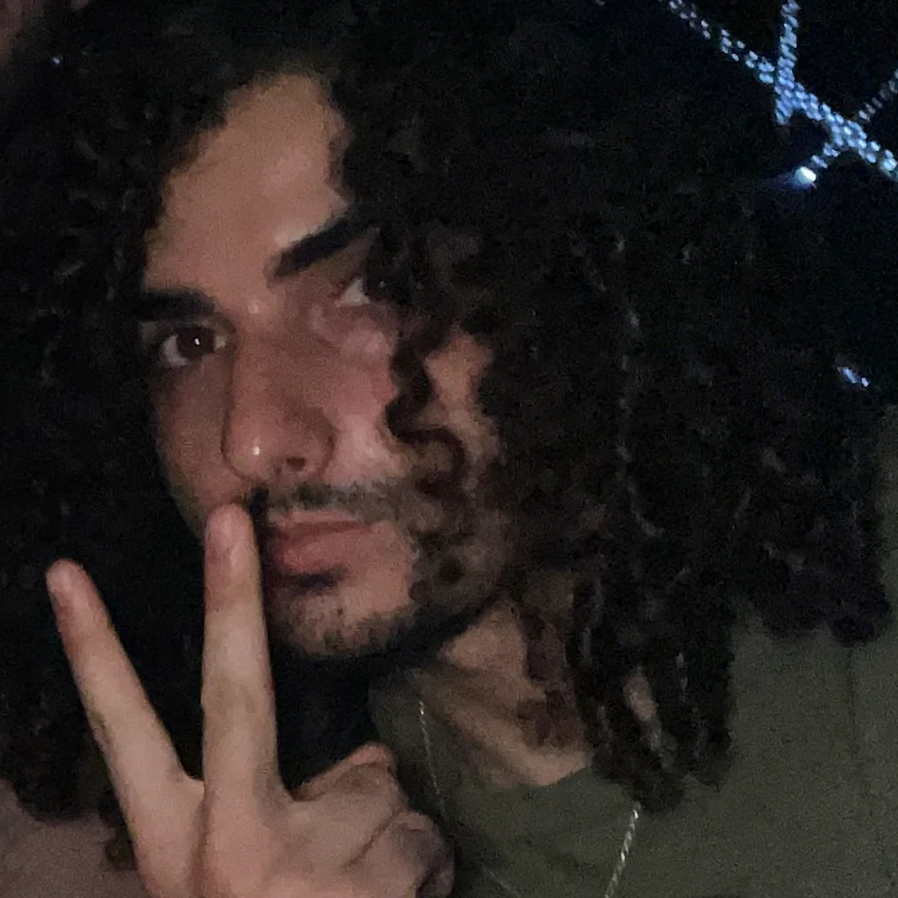
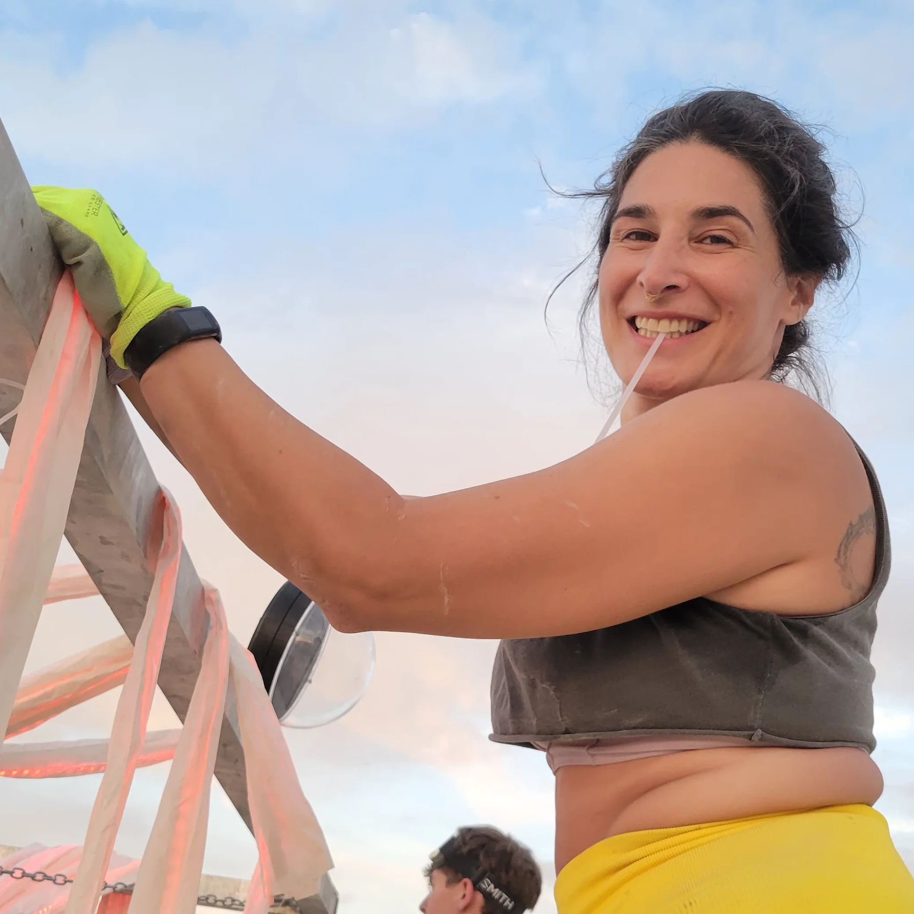
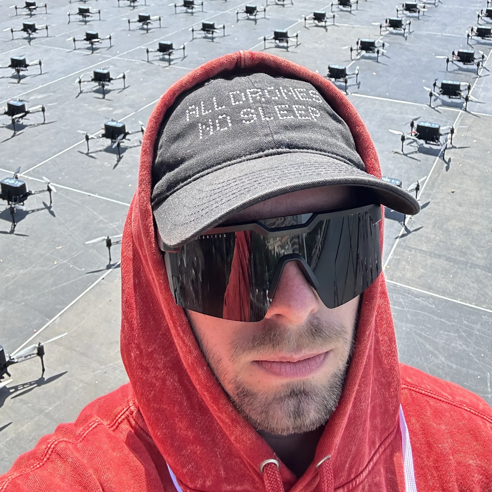
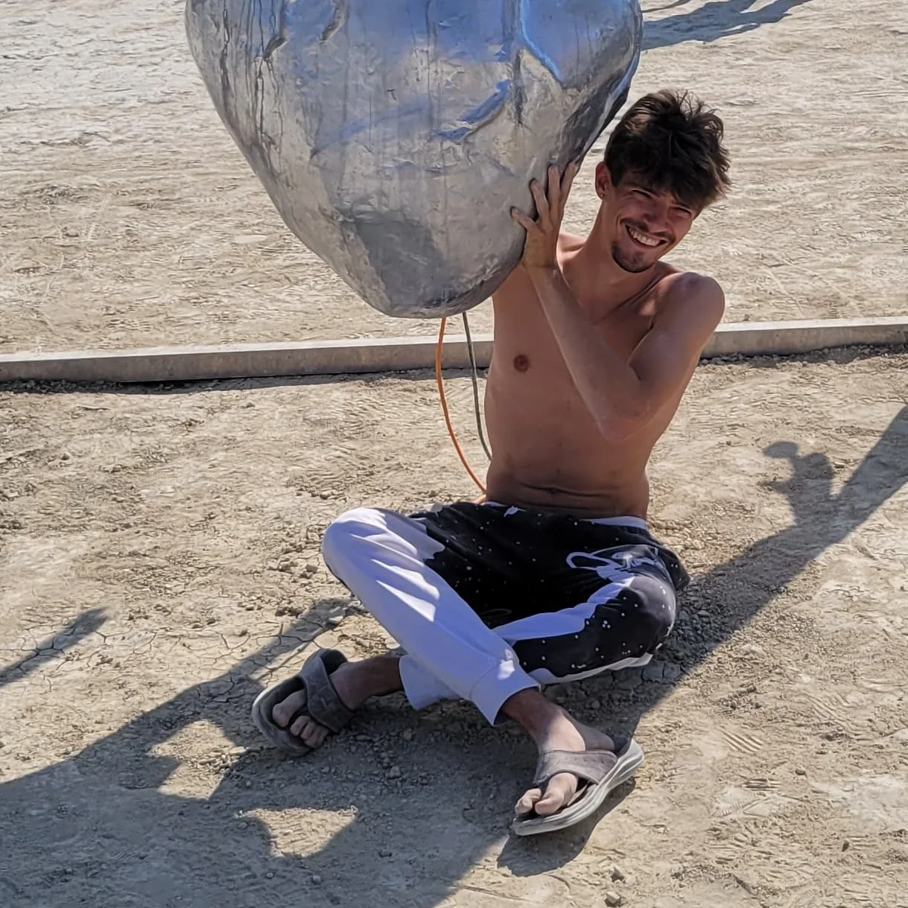
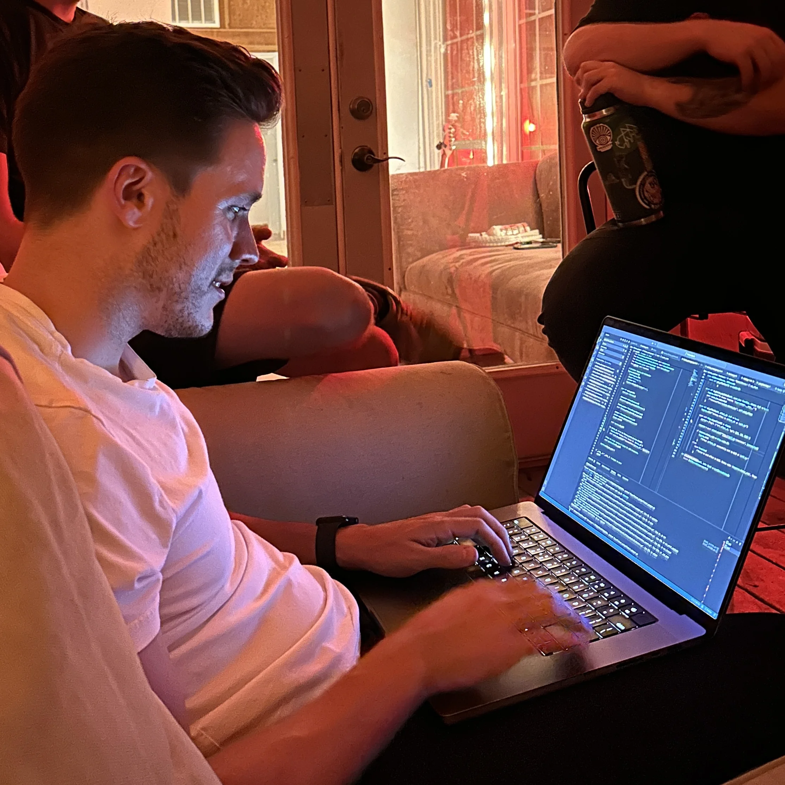

Team Member
Brandon
Use this area for a short bio that introduces the person, their discipline, and how they contribute to Nebula's creative and educational work.
Nebula is powered by a small team with overlapping skills in visual art, technical production, education, and community-facing program design.

Team Member
Use this area for a short bio that introduces the person, their discipline, and how they contribute to Nebula's creative and educational work.

Team Member
Use this slot for a concise introduction covering background, areas of focus, and the perspective they bring to workshops, installations, or production.

Team Member
This bio area can hold a few sentences about teaching style, technical specialties, artistic interests, or community partnership experience.

Team Member
Use this entry for someone focused on creative direction, fabrication, lighting, software, media production, or public-facing event execution.

Team Member
This section is ready for a headshot and a flexible bio that can be updated later with credentials, accomplishments, or current program leadership.

Team Member
Use the final profile slot for another member, collaborator, or advisor with room for a short narrative about their role in Nebula's mission.